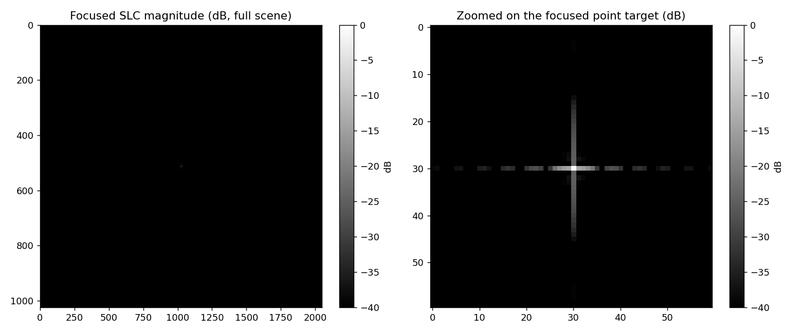
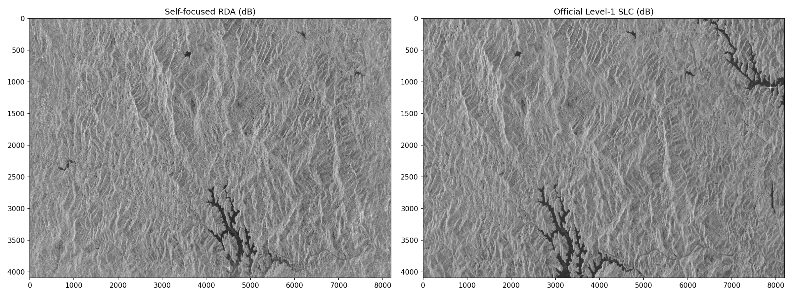
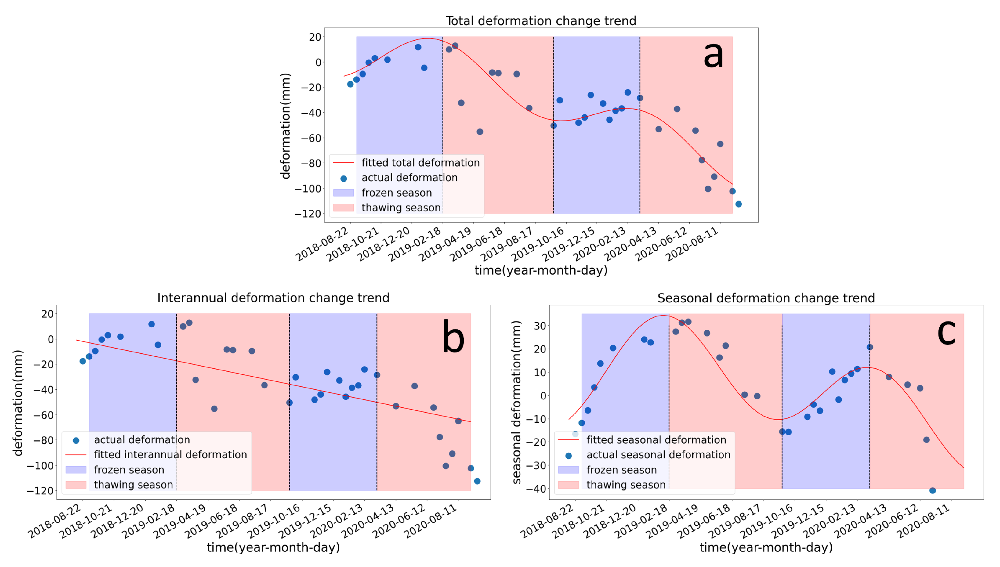
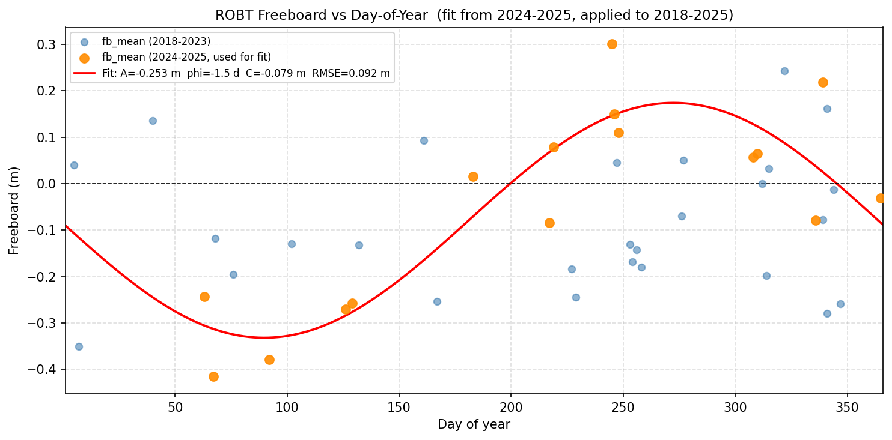

PhD · Geosensing
University of Houston
Supervised by Dr. Surui Xie
GPA: 4.00 / 4.00
Key courses: Lidar Systems and Applications · Marine and Coastal Geosensing · Applied Geospatial Computation · Principles of Satellite Altimetry
Hello! I’m
Ph.D Student
My name is Peng Zhang. I am currently a Ph.D student at the Marine and Coastal Geodesy Group, University of Houston, where I am contributing to GNSS‑IR, InSAR, Remote Sensing and GeoAI.
University of Houston
Supervised by Dr. Surui Xie
GPA: 4.00 / 4.00
Key courses: Lidar Systems and Applications · Marine and Coastal Geosensing · Applied Geospatial Computation · Principles of Satellite Altimetry
University of Electronic Science and Technology of China
GPA: 3.67 / 4.00
Key courses: Modern Testing Technology · Methods and Applications of Signal Processing · Surveying and Mapping · Microwave Measurement
University of Electronic Science and Technology of China
GPA: 3.80 / 4.00
Key courses: Signals and Systems · Microcomputer System Theory and Embedded System Design · Electronic Measurement Theory and Test Systems · Microwave Technology and Radio-Frequency Circuit
Tianjin Yunyao Yuhang Technology Co., Ltd.

Current Projects and Research
My research interests span a broad spectrum, primarily focusing on algorithmic advancements in GNSS, RS, GIS, and GeoAI, as well as their integration with multidisciplinary fields.
During my doctoral studies, I will focus on advanced investigations of GNSS-IR and InSAR techniques. Concurrently, I maintain a strong research interest in GeoAI and WebGIS domains.
I welcome scholarly discussions and potential collaborations.
Past Projects & Research





Remote Sensing (RS), 2022 Featured
@article{zhang2022permafrost_norilsk,
title = {Permafrost Early Deformation Signals before the Norilsk Oil Tank Collapse in Russia},
author = {Zhang, Peng and Chen, Yan and Ran, Youhua and Chen, Yunping},
journal = {Remote Sensing},
year = {2022}
}
2022 IGARSS
@inproceedings{zhang2022nonlocal_fcm,
title = {A Non-Local Fuzzy C-Means Clustering Segmentation Algorithm Based on Comentropy and Between-Cluster Scatter Matrix to Overcome the Inherent Coherence Speckles of SAR Images},
author = {Zhang, Peng and Chen, Yan and Chen, Yunping},
booktitle = {IGARSS 2022 - IEEE International Geoscience and Remote Sensing Symposium},
year = {2022}
}
2022 IGARSS
@inproceedings{zhang2022permafrost_qtp,
title = {Permafrost Stability and Land Surface Temperature Distribution Study Using Multi-Source Remote Sensing Data in the Qinghai-Tibet Plateau},
author = {Zhang, Peng and Chen, Yan and Chen, Yunping},
booktitle = {IGARSS 2022 - IEEE International Geoscience and Remote Sensing Symposium},
year = {2022}
}
2021 IGARSS
@inproceedings{zhang2021polsar_filtering,
title = {A Filtering Algorithm Based on Polarization Decomposition for Better Preserving Polsar Image Scattering Features},
author = {Zhang, Peng and Chen, Yan and Chen, Yunping and Lu, Youchun and Xu, Chunliang},
booktitle = {IGARSS 2021 - IEEE International Geoscience and Remote Sensing Symposium},
year = {2021}
}
Click DOI to view the paper, or CITE for BibTeX.